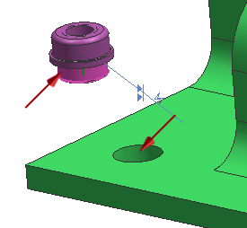
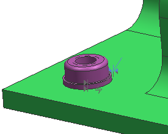

将螺帽(nut)约束到支架(bracket)上
-
在如图所示的铆钉螺母(clinch nut)和支承法兰(mounting flange)间创建一个接触/对齐→接触约束。
铆螺母在组件预览窗口中，可以旋转、放大，并从组件中选择您需要的几何体。

-
在铆螺母的颈圈与支架上的其中一个孔间创建一个接触/对齐→自动判断中心/轴约束。

-
在预览组中，选择在主窗口中预览组件
 复选框。
复选框。
-
查看螺母位置并点击确定。